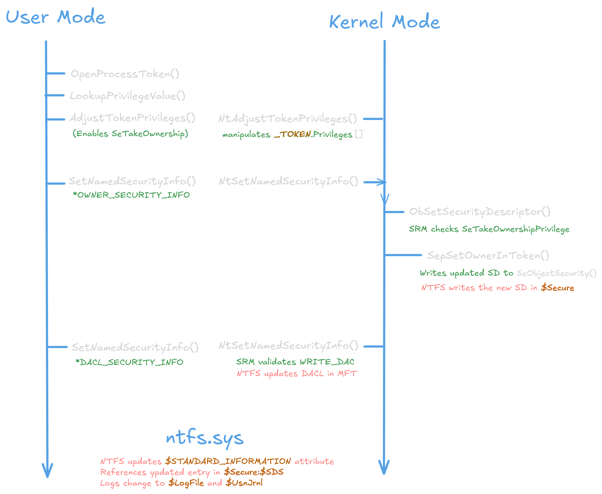
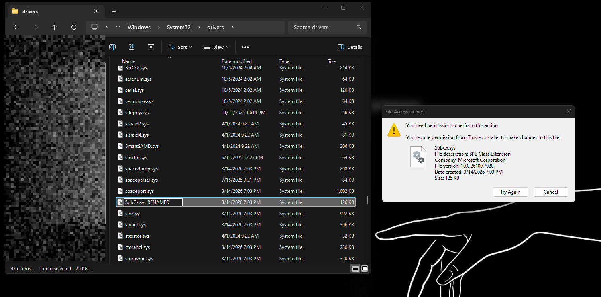
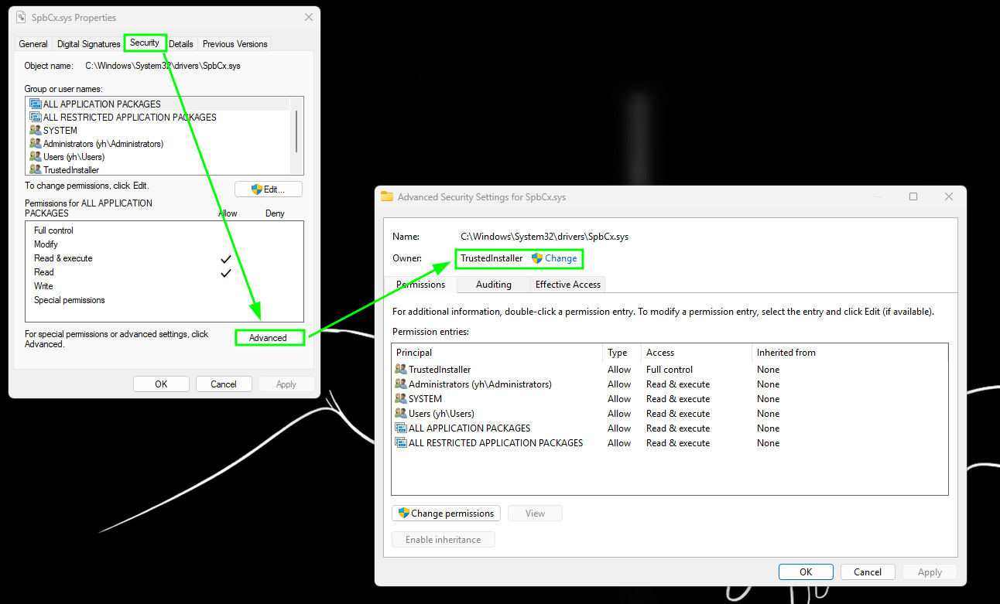
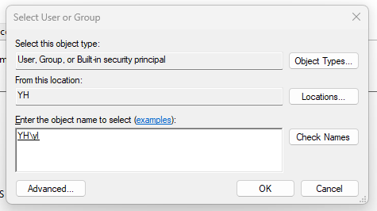
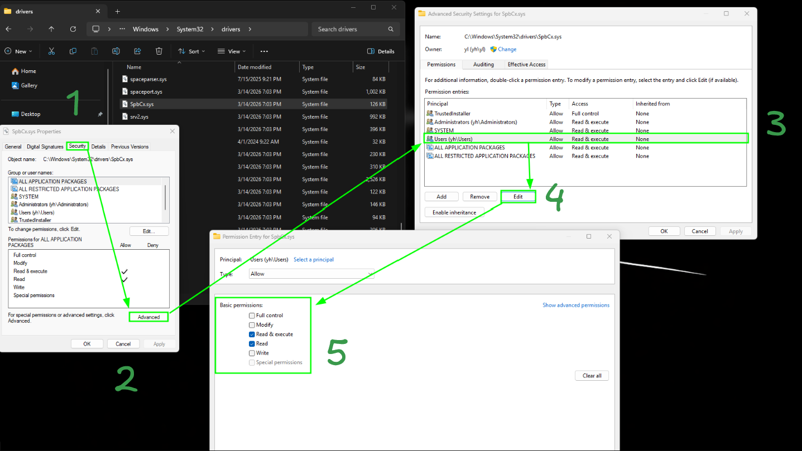
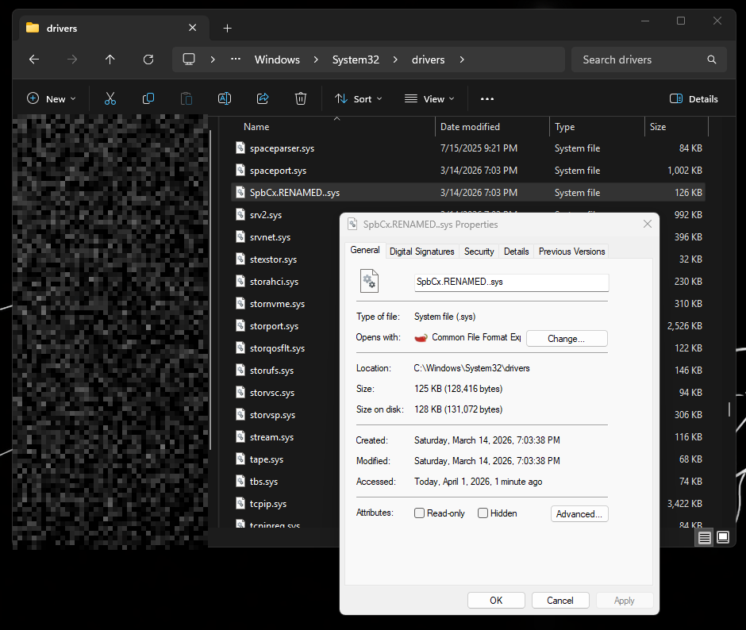
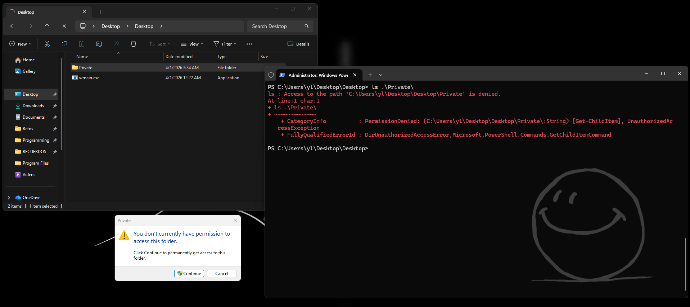
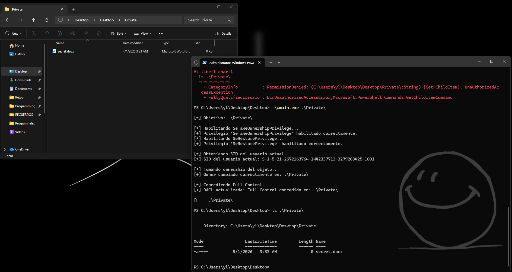

Taking Back Control - Windows File Ownership
TrustedInstallers
If you have ever tried to rename, delete, or modify a driver file inside the System32/drivers’s path, you have most likely received a prompt saying: “You require permission from TrustedInstaller”. Even running it as a NT/SYSTEM user is not enough. That is by default.
Start with Windows Vista, MIcrosoft introduced Windows Resource Protection (WRP), replacing the older System File Checker model. The core idea was and is to create a dedicated service account, in this case: NT SERVICE\TrustedInstaller, and make it the legal Owner of every critical system file.
I see it as an attempt to mimic the separation of powers in a government, splitting powers so that they are not centralized. Thus a user doesn’t have full access to the system and isn’t a constant target.
Administrators get read and execute rights, but nothing more. Modifications is reserved exclusively for Windows Update and isntaller pipelines that run under TrustedInstaller’s identity. All of this to ensure that even the compromissed SYSTEM process cannot silently replace ntoskrnl.exe or any driver to make persistence. Furthermore, the TrustedInstaller account is a service instead of an user.
This psot shows you exactly how to take ownership of the file and rewrite its access control list to rename, replace and modify a driver inside the priviledge folder: System32.
Security Model: SRM and Security Descriptor
Windows implements the control access via the SRM (Security Reference Monitor), a component that stands inside the kernel (ntoskrnl.exe). Every securable object in Windows: files, registry keys, processes, named pipes; carries a Security Descriptor (SD).
On disk, NTFS stores this is the $Secure metada file referenced from each file’s MFT entry via the $STANDARD_INFORMATION attribute.
typedef struct _SECURITY_DESCRIPTOR {
BYTE Revision; // always 1 — version of the SD format
BYTE Sbz1; // alignment padding
WORD Control; // flags: SE_DACL_PRESENT, SE_OWNER_DEFAULTED, ...
PSID Owner; // SID
PSID Group; // primary group SID
PACL Sacl; // System ACL — audit entries (needs SeSecurityPrivilege)
PACL Dacl; // Discretionary ACL (Access Control List) — who can access and how
} SECURITY_DESCRIPTOR;The DACL (Discretionary Access Control List) is a list of Access Control Entries (ACEs). Each ACE pairs a SID with a bitmask of rights [GENERIC_READ, GENERIC_WRITE, DELETE] and a type of flag [either ACCESS_ALLOW_ACE or ACCESS_DENIED_ACE]. The Windows kernel’s SRM evaluates these entries top-to-bottom at access time.
The owner field is the core of this post. An object’s owner has two access rights that are independent of the DACL.
- Read the SD (
READ_CONTROL) - Rewrite the DACL (
WRITE_DAC)
This means that if you become the owner, you can grant yourself any permissions you want, even if the original DACL explicitly deniend everything, such as the non-read flag.
Security Identifiers under the hood
A SID is used to uniquely identify a security principal or security group. Security principals can represent any entity that the operating system can authenticate. Examples include a user account, a computer account, or a thread or process that runs in the security context of a user or computer account.
S-1-5-80-956008885-3418522649-1831038044-1853292631-2271478464
│ │ │ └────────────────────────────────────────────────────┘
│ │ │ Sub-authority chain (identifies the account)
│ │ └─ Identifier Authority (5 = NT Authority)
│ └──── Revision (always 1)
└────── Literal prefix
// Common built-in SIDs:
S-1-5-18 → NT AUTHORITY\SYSTEM
S-1-5-19 → NT AUTHORITY\LOCAL SERVICE
S-1-5-80-... → NT SERVICE\TrustedInstaller (long sub-authority chain)
S-1-5-32-544 → BUILTIN\AdministratorsEach time a user signs in, the system creates an access token for that user. That token contains the users SID, user rights, and the SIDs for any groups the user belongs to.
On the other hand, TrustedInstaller’s SID si a Virtual Service Account SID (VSA), which it never maps toa real login session, it exists only as a token princiapl that the SCM (Service Control Managar) can instantiate when running the Windows Modules Installer service, executed: TrustedInstaller.exe.
Token Privileges
Every process carries an Access Token, as we debated earlier in other posts. Being a kernel object _TOKEN attached to the process that defines its security identity. Beyond group SIDs, a token cointa sa list of privileges, also named capabilities that grant acces to sensitive operaations of DACL objetcs.
In this post we mainly focus on SeTakeOwnershipPrivilege and SeRestorePrivilege.
SeTakeOwnershipPrivilege
Allows assigning yourself as owner of any object, bypassing DACL checks, You can only set your own SID (or a group you belong to) as owner.
Required to take ownership of an object without being granted discretionary access. This privilege allows the owner value to be set only to those values that the holder may legitimately assign as the owner of an object.
User Right: Take ownership of files or other objects.
SeRestorePrivilege
Allows assigning any SID as owner, including third parties. Use by backup/restore pipelines. More powerfil than TakeOwnerShip.
Required to perform restore operations. This privilege causes the system to grant all write access control to any file, regardless of the ACL specified for the file. Any access request other than write is still evaluated with the ACL. Additionally, this privilege enables you to set any valid user or group SID as the owner of a file. This privilege is required by the RegLoadKey function. The following access rights are granted if this privilege is held:
- WRITE_DAC
- WRITE_OWNER
- ACCESS_SYSTEM_SECURITY
- FILE_GENERIC_WRITE
- FILE_ADD_FILE
- FILE_ADD_SUBDIRECTORY
- DELETE
User Right: Restore files and directories.
If the file is located on a removable drive and the “Audit Removable Storage” is enabled, the SE_SECURITY_NAME is required to have ACCESS_SYSTEM_SECURITY.
Privileges present in a token are often disabled by default to reduce attack surface. You must call functions like: AdjustTokenPrivileges() to flip them to SE_PRIVILEGE_ENABLE before the kernel will honor them. Simply having the privilege in the token is not enough.
Full call flow
Forwards, the flow that Windows choose while calling SetNamedSecurityInfo() to change the owner field.

Script + POC
The program below does four things in sequence:
- Enables the required privileges in the process token
- Reads the current users SID
- Transfers ownership of the target path to that SID
- Rewriets the DACL to grant
FULL_CONTROL
Compiling
MSVC: cl take_ownership.c /link advapi32.lib
MinGW: gcc take_ownership.c -o take_ownership -ladvapi32
Run the resulting binary from an elevated (Administrator) command prompt.
#include <windows.h>
#include <aclapi.h>
#include <sddl.h>
#include <stdio.h>
#include <stdlib.h>
#ifndef UNICODE
#define UNICODE
#endif
#ifndef _UNICODE
#define _UNICODE
#endif
#ifndef WIN32_LEAN_AND_MEAN
#define WIN32_LEAN_AND_MEAN
#endif
#ifndef _WIN32_WINNT
#define _WIN32_WINNT 0x0600
#endif
#ifndef OWNER_SECURITY_INFO
#define OWNER_SECURITY_INFO (0x00000001L)
#endif
#ifndef DACL_SECURITY_INFO
#define DACL_SECURITY_INFO (0x00000004L)
#endif
#ifndef PROTECTED_DACL_SECURITY_INFO
#define PROTECTED_DACL_SECURITY_INFO (0x80000000L)
#endif
static BOOL EnablePrivilege(LPCTSTR lpszPrivilege, BOOL bEnablePrivilege)
{
TOKEN_PRIVILEGES tp;
LUID luid;
HANDLE hToken;
if (!OpenProcessToken(GetCurrentProcess(),TOKEN_ADJUST_PRIVILEGES | TOKEN_QUERY, &hToken))
{
wprintf(L"[-] OpenProcessToken error: %lu\n", GetLastError());
return FALSE;
}
if (!LookupPrivilegeValue(NULL,lpszPrivilege,&luid))
{
wprintf(L"[-] LookupPrivilegeValue error: %lu\n", GetLastError());
CloseHandle(hToken);
return FALSE;
}
tp.PrivilegeCount = 1;
tp.Privileges[0].Luid = luid;
tp.Privileges[0].Attributes = bEnablePrivilege ? SE_PRIVILEGE_ENABLED : 0;
if (!AdjustTokenPrivileges(hToken, FALSE, &tp, sizeof(tp), NULL, NULL))
{
wprintf(L"[-] AdjustTokenPrivileges error: %lu\n", GetLastError());
CloseHandle(hToken);
return FALSE;
}
if (GetLastError() == ERROR_NOT_ALL_ASSIGNED)
{
wprintf(L"[-] The privilege '%s' is not present in the process token.\n",
lpszPrivilege);
wprintf(L" Make sure to run as Administrator.\n");
CloseHandle(hToken);
return FALSE;
}
wprintf(L"[+] Privilege '%s' successfully enabled.\n", lpszPrivilege);
CloseHandle(hToken);
return TRUE;
}
static PSID GetCurrentUserSID(void)
{
HANDLE hToken = NULL;
PTOKEN_USER pTokenUser = NULL;
DWORD dwSize = 0;
PSID pSidCopy = NULL;
if (!OpenProcessToken(GetCurrentProcess(), TOKEN_QUERY, &hToken))
{
wprintf(L"[-] OpenProcessToken (query) error: %lu\n", GetLastError());
return NULL;
}
GetTokenInformation(hToken, TokenUser, NULL, 0, &dwSize);
pTokenUser = (PTOKEN_USER)LocalAlloc(LPTR, dwSize);
if (!pTokenUser)
{
wprintf(L"[-] LocalAlloc error: %lu\n", GetLastError());
CloseHandle(hToken);
return NULL;
}
if (!GetTokenInformation(hToken, TokenUser, pTokenUser, dwSize, &dwSize))
{
wprintf(L"[-] GetTokenInformation error: %lu\n", GetLastError());
LocalFree(pTokenUser);
CloseHandle(hToken);
return NULL;
}
DWORD sidLen = GetLengthSid(pTokenUser->User.Sid);
pSidCopy = (PSID)LocalAlloc(LPTR, sidLen);
if (pSidCopy)
CopySid(sidLen, pSidCopy, pTokenUser->User.Sid);
LPTSTR strSid = NULL;
if (ConvertSidToStringSid(pSidCopy, &strSid))
{
wprintf(L"[*] Current user SID: %s\n", strSid);
LocalFree(strSid);
}
LocalFree(pTokenUser);
CloseHandle(hToken);
return pSidCopy;
}
static BOOL TakeOwnership(LPCWSTR pszPath, PSID pSid)
{
DWORD dwResult;
dwResult = SetNamedSecurityInfo((LPWSTR)pszPath, SE_FILE_OBJECT, OWNER_SECURITY_INFO, pSid, NULL, NULL, NULL);
if (dwResult != ERROR_SUCCESS)
{
wprintf(L"[-] SetNamedSecurityInfo (Owner) error: %lu\n", dwResult);
return FALSE;
}
wprintf(L"[+] Owner successfully changed on: %s\n", pszPath);
return TRUE;
}
static BOOL GrantFullControl(LPCWSTR pszPath, PSID pSid)
{
DWORD dwResult;
EXPLICIT_ACCESS ea;
ZeroMemory(&ea, sizeof(ea));
ea.grfAccessPermissions = GENERIC_ALL;
ea.grfAccessMode = SET_ACCESS;
ea.grfInheritance = SUB_CONTAINERS_AND_OBJECTS_INHERIT;
ea.Trustee.TrusteeForm = TRUSTEE_IS_SID;
ea.Trustee.TrusteeType = TRUSTEE_IS_USER;
ea.Trustee.ptstrName = (LPTSTR)pSid;
PACL pNewDACL = NULL;
dwResult = SetEntriesInAcl(1, &ea, NULL, &pNewDACL);
if (dwResult != ERROR_SUCCESS)
{
wprintf(L"[-] SetEntriesInAcl error: %lu\n", dwResult);
return FALSE;
}
dwResult = SetNamedSecurityInfo((LPWSTR)pszPath, SE_FILE_OBJECT,DACL_SECURITY_INFO | PROTECTED_DACL_SECURITY_INFO, NULL, NULL, pNewDACL,NULL);
LocalFree(pNewDACL);
if (dwResult != ERROR_SUCCESS)
{
wprintf(L"[-] SetNamedSecurityInfo (DACL) error: %lu\n", dwResult);
return FALSE;
}
wprintf(L"[+] DACL updated: Full Control granted on: %s\n", pszPath);
return TRUE;
}
int wmain(int argc, WCHAR *argv[])
{
if (argc < 2)
{
wprintf(L"Usage: take_ownership.exe <file_or_directory_path>\n");
wprintf(L"Example: take_ownership.exe C:\\Windows\\System32\\en-US\n");
return 1;
}
LPCWSTR pszTarget = argv[1];
wprintf(L"\n[*] Target: %s\n\n", pszTarget);
wprintf(L"[*] Enabling SeTakeOwnershipPrivilege...\n");
if (!EnablePrivilege(SE_TAKE_OWNERSHIP_NAME, TRUE))
return 1;
wprintf(L"[*] Enabling SeRestorePrivilege...\n");
EnablePrivilege(SE_RESTORE_NAME, TRUE);
wprintf(L"\n[*] Retrieving current user SID...\n");
PSID pMySID = GetCurrentUserSID();
if (!pMySID)
return 1;
wprintf(L"\n[*] Taking ownership of the object...\n");
if (!TakeOwnership(pszTarget, pMySID))
{
LocalFree(pMySID);
return 1;
}
wprintf(L"\n[*] Granting Full Control...\n");
if (!GrantFullControl(pszTarget, pMySID))
{
LocalFree(pMySID);
return 1;
}
LocalFree(pMySID);
wprintf(L"\nOperation completed. You now have full control over:\n");
wprintf(L" %s\n\n", pszTarget);
return 0;
}Brief explanation of each function for those who are not familiarizated with windows programming:
| Function | Description |
|---|---|
| EnablePrivilege() | Activates a privilege in the current process token. It only works if the privilege is present but disabled, using a kernel routine to adjust it. |
| GetCurrentUserSID() | Retrieves the Security Identifier (SID) of the current user from the process token and stores it in dynamically allocated memory that must be freed later. |
| TakeOwnership() | First step in modifying access control. Sets the current user as the owner of a file or directory after verifying the required privilege. |
| GrantFullControl() | Second step after ownership is obtained. Updates the access control list to grant the current user full access rights. |
And some winapi calls, table created by Claude OPUS 4.6:
| Function | Purpose | Header / Lib |
|---|---|---|
| OpenProcessToken() | Opens the Access Token object associated with a process. Returns a HANDLE that can be passed to token query/manipulation functions. | advapi32.lib |
| LookupPrivilegeValue() | Translates a privilege name string (e.g. "SeTakeOwnershipPrivilege") into its session-local LUID, which the kernel uses internally to identify it. |
advapi32.lib |
| AdjustTokenPrivileges() | Enables or disables privileges in an open token. Calls NtAdjustPrivilegesToken() in kernel mode. Must be called before the kernel will honor a privilege during access checks. |
advapi32.lib |
| GetTokenInformation() | Retrieves various information classes from a token. We use TokenUser to get the TOKEN_USER structure containing the caller’s SID and attribute flags. |
advapi32.lib |
| CopySid() | Copies a SID from one buffer to another. Necessary because the SID returned inside TOKEN_USER is embedded inline and shares memory with the query buffer. |
advapi32.lib |
| SetNamedSecurityInfo() | The main workhorse. Modifies one or more components of an object’s Security Descriptor by name. The SecurityInfo bitmask selects which components to update (OWNER_SECURITY_INFO, DACL_SECURITY_INFO, etc.). |
advapi32.lib |
| SetEntriesInAcl() | Merges an array of EXPLICIT_ACCESS structures with an existing ACL (or NULL) to produce a new binary ACL. Handles all internal ACL bookkeeping (header, ACE alignment, size fields). |
advapi32.lib |
| GetCurrentProcess() | Returns a pseudo-handle (-1 / 0xFFFFFFFFFFFFFFFF) for the current process. No actual kernel object is opened; the handle is resolved by the kernel on each call that receives it. |
kernel32.lib |
Image POC / Step Guide
If you try to rename a driver inside System32 path you will encour with the following prompt:

Its because the owner file is TrustedInstaller

But we can change that, by pressing the Change buttom and writing you username

Once you change the owner, you are able to change your own privileges:

And there you have, your driver renamed and signed correctly!

Terminal Guide
Also works for private folders inside a Desktop:

With our code, we are able to bypass it and see its content

Implementation
Understanding file ownership and the TrustedInstaller mechanism you can use it not only to show off what you know, but also to driver replacemente for custom persistence, driver testing, replacing some existing .sys file without going through a full signed installer. A deep understanding in how WRP protectiion works to offline analysis pipelines and VM-based sandbox in Forensics Labs. Some anticheats programs that only verifies the path where the DLL is and not the real signature…
Forensics Apply
If you dig in, you will find useful methods for this feature, consider that every SD change keeps a log in $UsnJrnl and $LogFile, thus these operations are forensically visible… Be careful where do you use it.
For those forensics nerds like me, I will leave a quick reference with each artifact to identify the activity.
| Artifact | Tells you | Retention | Tool |
|---|---|---|---|
| $UsnJrnl | Indicates that a security change occurred, but not the exact modification; precise attribution typically requires Event Logs. | Days–weeks (size-limited circular journal) | MFTECmd, fsutil |
| $LogFile | Raw NTFS transaction data at MFT attribute level | Hours–days (~65 MB circular buffer) | LogFileParser |
| Event 4670 | Old Security Descriptor → New Security Descriptor (SDDL), and user | Until log rotation (configurable) | Event Viewer, PowerShell |
| Event 4674 | Which privilege was exercised and by which process (PID) | Until log rotation | Event Viewer, PowerShell |
| SACL on file | Detailed access attempts matching audit rules (most granular visibility) | Real-time → stored in Security Event Log | icacls, accesschk |
Furthermore, you can use accesschk64 to list ACL from a file, and get conclusion. In our case, we can see that SpbCx.sys has a local account (yh\yl) with read/write perms, making it vulnerable as we talk before. In the next command we can see a default ACL from a normal driver in System32 path. As you can compare, the way to identify this persistence is evidence.
C:\>"C:\Program Files\Microsoft SysInternals Suite (MSI)\accesschk64.exe" -nobanner /accepteula %SystemRoot%\System32\drivers\SpbCx.sys
C:\WINDOWS\System32\drivers\SpbCx.sys
RW NT SERVICE\TrustedInstaller
R BUILTIN\Administrators
R NT AUTHORITY\SYSTEM
RW BUILTIN\Users
R APPLICATION PACKAGE AUTHORITY\ALL APPLICATION PACKAGES
R APPLICATION PACKAGE AUTHORITY\ALL RESTRICTED APPLICATION PACKAGES
RW yh\yl
C:\>"C:\Program Files\Microsoft SysInternals Suite (MSI)\accesschk64.exe" -nobanner /accepteula %SystemRoot%\System32\drivers\srv2.sys
C:\WINDOWS\System32\drivers\srv2.sys
RW NT SERVICE\TrustedInstaller
R BUILTIN\Administrators
R NT AUTHORITY\SYSTEM
R BUILTIN\Users
R APPLICATION PACKAGE AUTHORITY\ALL APPLICATION PACKAGES
R APPLICATION PACKAGE AUTHORITY\ALL RESTRICTED APPLICATION PACKAGES